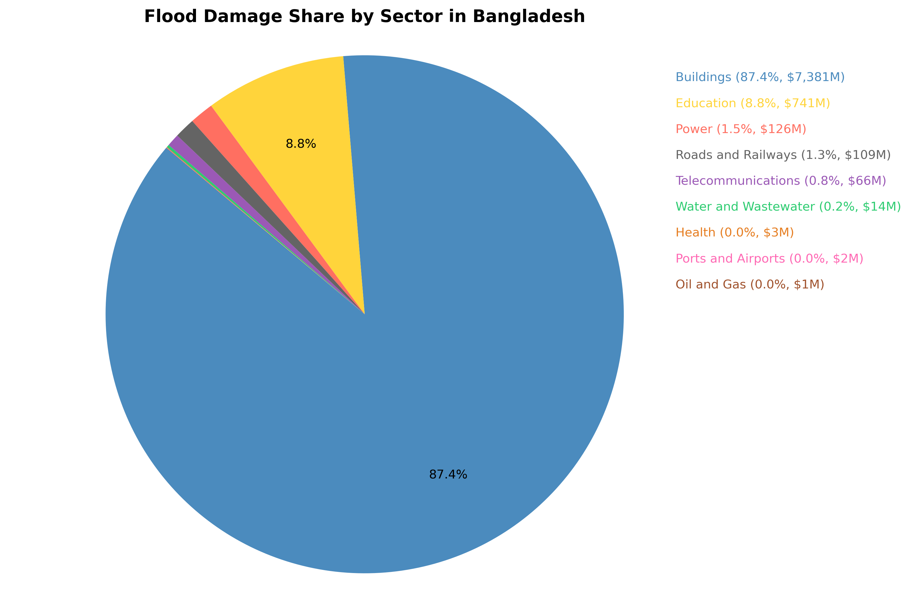
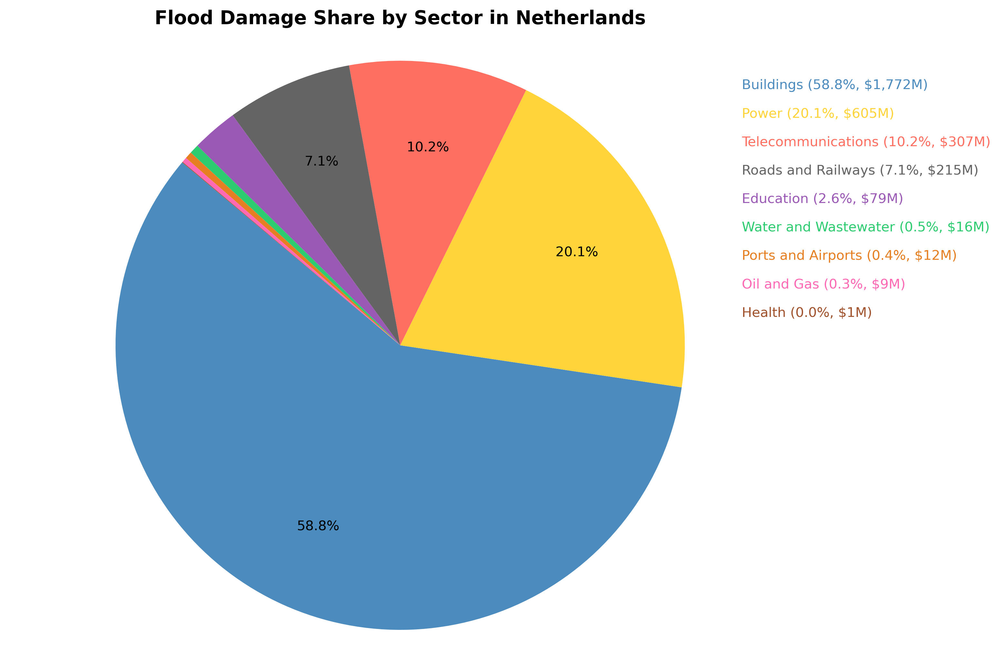
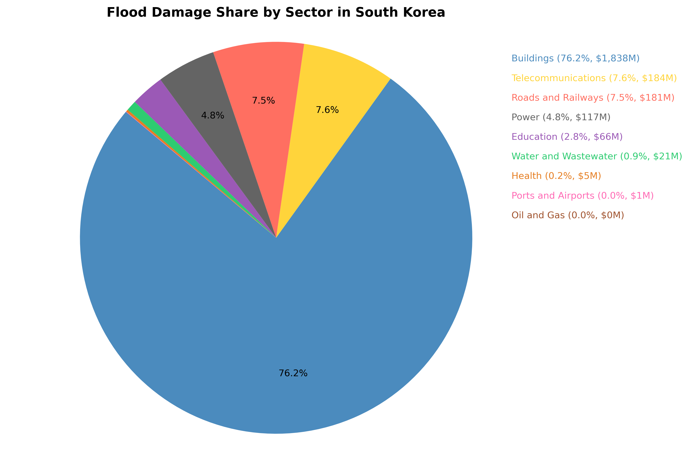
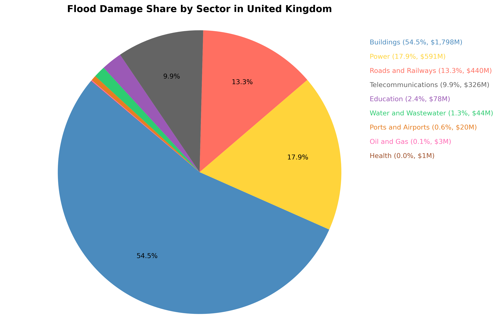

This pie chart illustrates the distribution of flood-related damages across different sectors in Bangladesh. The data reveals that buildings bear the brunt of flood impacts, followed by education and power infrastructure. This kind of breakdown helps identify the most vulnerable infrastructure areas for future risk mitigation planning.
This visual highlights how flood damages are distributed in the Netherlands. While buildings remain the most affected sector, substantial losses also occur in the power and telecommunications sectors, indicating the critical importance of protecting utilities and networks in developed countries.
Flood damages in South Korea heavily impact the buildings sector, with significant losses in telecommunications and roads as well. The chart provides insights into which public systems require the most resilience-building measures.
This pie chart shows flood-related economic losses in the United Kingdom. Buildings, power, and road infrastructure comprise the largest sectors affected, pointing to the importance of adaptive infrastructure planning and early warning systems in urban areas.
